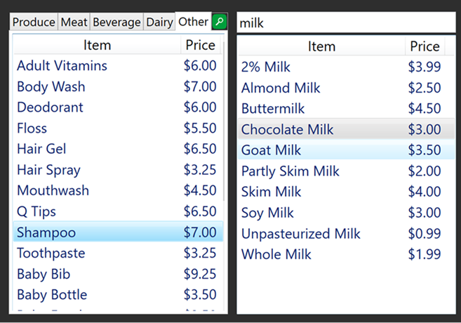
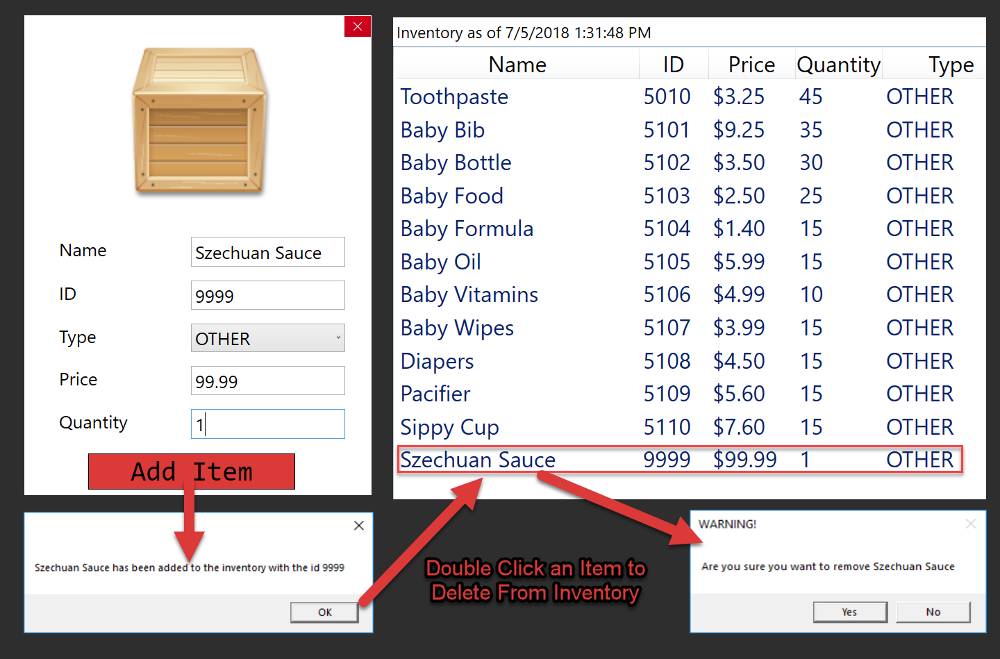
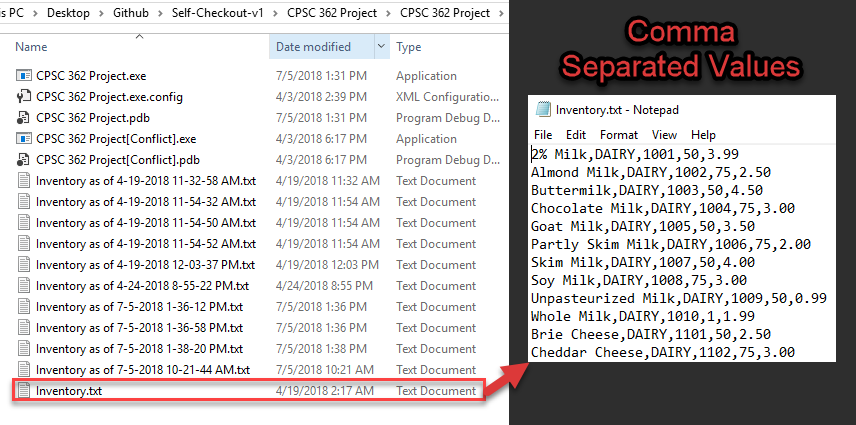
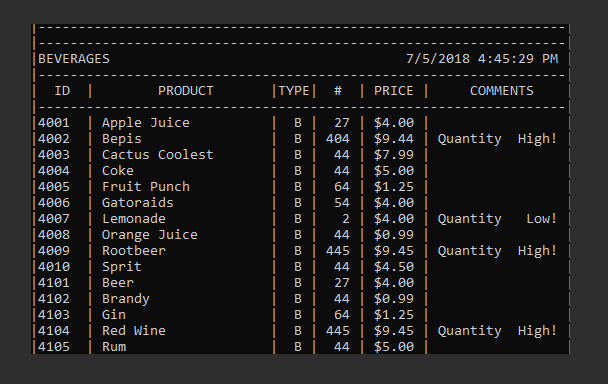
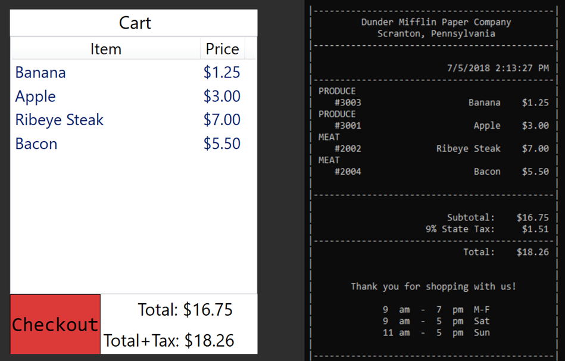

Project One
Updated on July 5th, 2018
This application is based on the American self checkout system, often found in supermarkets and home improvement stores. Most of these machines require the user to add their items using a barcode scanner. This application does not follow the same methods due to the lack of physical hardware. Instead of scanning, the user has an interactive menu with the entire store inventory; divided into the following categories:
- Produce
- Meat
- Beverage
- Dairy
- Other
The user has two options for adding items. The first panel on the left allows the user to select items in a list that is divided into the 5 categories.
If the user does not want to view the items in a tab control, they can click on the search icon  .
This opens the center panel that allows the user to search for an item by a keyword.
.
This opens the center panel that allows the user to search for an item by a keyword.

This is a simplistic view of the inventory, only showing the item name and price. Just like a supermarket, customers don't usually have access to view more than these simple characteristics. In reality, each item contains the following attributes:
- Product Name
- Category
- Product ID
- Quantity
- Price
In order to view the rest of the item attributes, you must either be a floor manager, or a warehouse worker. The floor manager is given a unique username and password and has the ability to launch the login menu using "CTRL + I". After the employee logs in, they have a separate menu displayed, detailing items in the store's inventory.

Within this menu, the manager is able to view the entire inventory and all 5 item attributes. On top of this, the manager can remove and add items to and from the inventory.
After filling out the required information regarding the new item, the inventory list is updated with the new item in the appropriate category. If the manager decides to remove an item, they can just double click an item from the inventory. A YES/NO prompt is displayed to avoid the accidental removal of an item.
The only action the manager cannot complete within this menu is edit the attributes of an item. This can only be accomplished by a warehouse worker who has access to the backend of the program. In this case, the backend of the program is based on a .txt file called "Inventory.txt". If the worker needs to update an item attribute manually they can edit the file here as long as they stick to the following format:
"Product Name" , "Category" , "Product ID" , "Quantity" , "Price"
Since this is a demo, each time the program starts up it reads the same values from the original text file, however, whenever a user checks out items or a manager adds/removes an item, a new inventory file is created. This updated file includes a date and time of the last edit to the inventory.
The backend of the program is accessible through the file manager and the console. At any time, the warehouse worker can open the console and view a live update of the inventory. In this menu, the worker can view comments about specific items. The application automatically generates a comment whenever an item's quantity drops below 10 or there is a surplus of 100 or more of an item.

The program also generates a virtual copy of the physical receipt detailing all items that were purchased along with the time and date of the transaction. This gives the warehouse a live view of each transaction going through the store.
